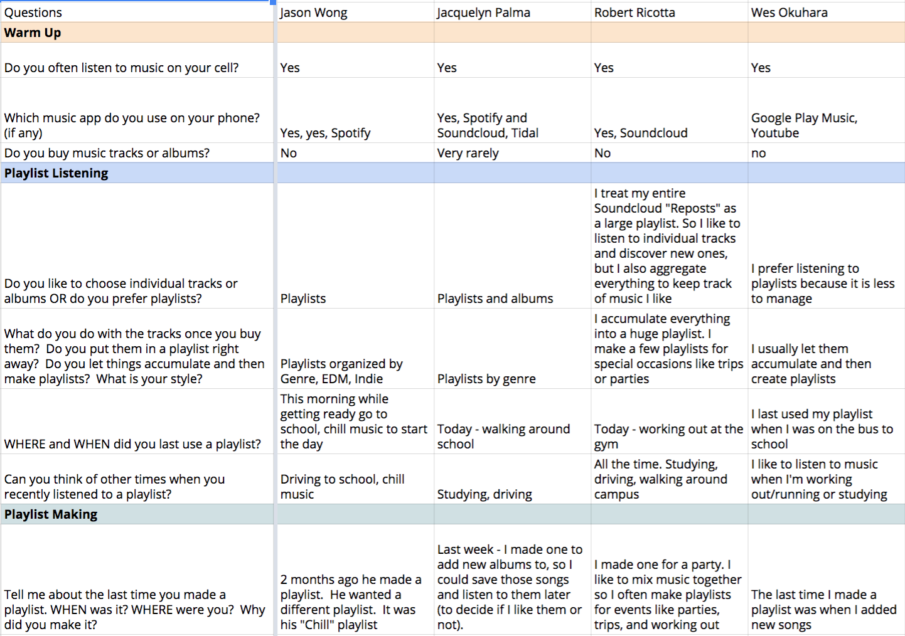

What We Found
We interviewed users in order to learn when they use playlists, why they use playlists, if they even thought about it, we wanted to know.
We used these interviews to lay out some use cases for playlists, and traced out the steps to accomplish these use cases on other apps in the market.
For the most common use cases we even watched users using our competitors applications in order to discover where they had difficulties using those applications.
Using this data we discovered which tasks could be simplified and how to simplify them.